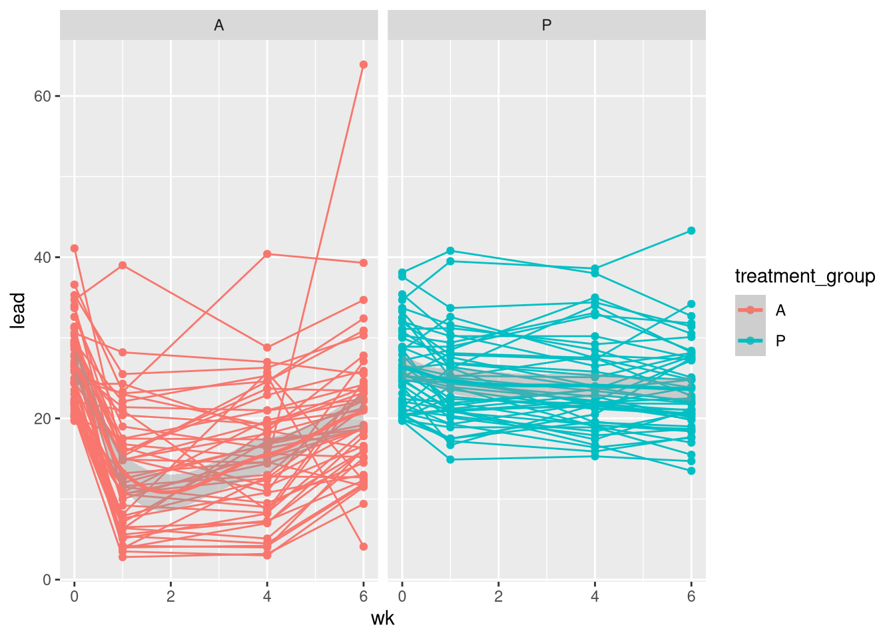
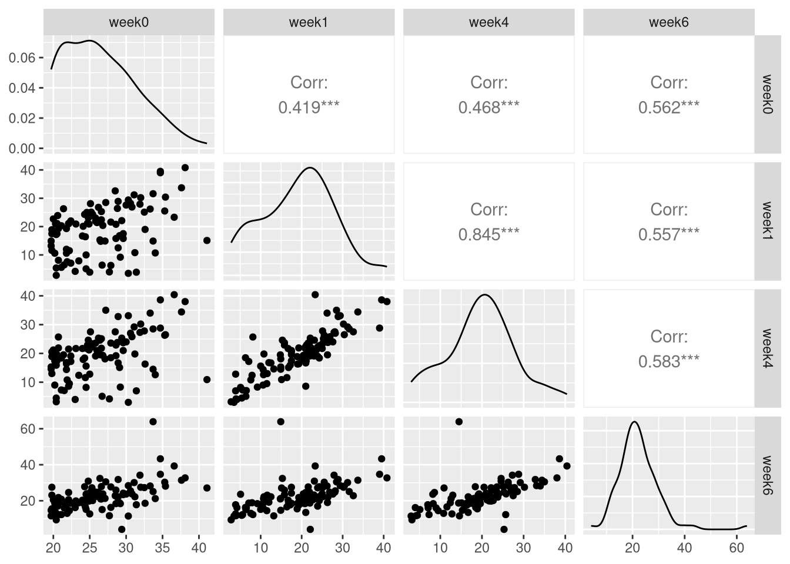
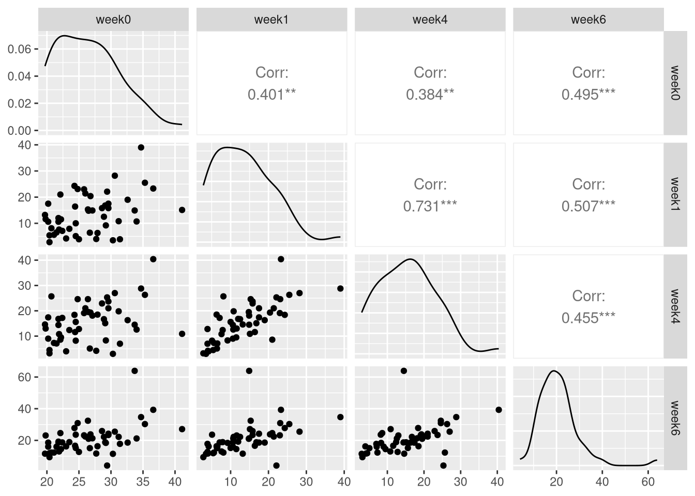
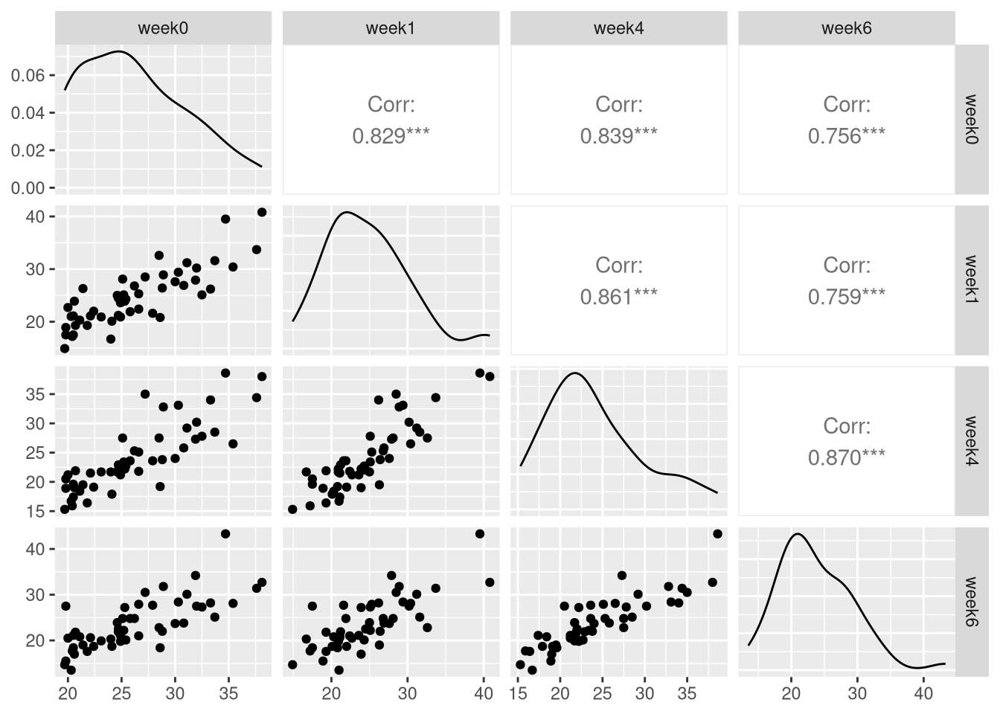

df_long = df |>
pivot_longer(cols = !c('ID', 'treatment_group'),
names_to = 'wk',
values_to = 'lead') |>
mutate(wk = parse_number(wk))Lab 5
Will Tirone
Q1)
Q2)
Generating some plots here:
df_long |>
ggplot(aes(y=lead, x=wk, color=treatment_group)) +
geom_point(aes(group = ID)) +
geom_line(aes(group = ID)) +
geom_smooth(method = 'loess') +
facet_wrap(~treatment_group)`geom_smooth()` using formula = 'y ~ x'
Q3)
Here, we visualize the structure across time with both treatment groups, and then each group individually. Interestingly, the placebo group has very high correlation across time.
# using wide
ggpairs(df[, -c(1,2)], progress=FALSE) # comparing the weeks 
ggpairs((df |> filter(treatment_group == 'A'))[, -c(1,2)], progress=FALSE)
ggpairs((df |> filter(treatment_group == 'P'))[, -c(1,2)], progress=FALSE)
Q4)
Here, we fit the model and perform an ANOVA test.
df_long = df_long |>
mutate(wk = as.factor(wk))
m1 = lm(lead ~ treatment_group * wk, data=df_long)
anova(m1)Analysis of Variance Table
Response: lead
Df Sum Sq Mean Sq F value Pr(>F)
treatment_group 1 3110.9 3110.8 70.862 7.281e-16 ***
wk 3 3272.8 1090.9 24.850 9.701e-15 ***
treatment_group:wk 3 2030.4 676.8 15.417 1.685e-09 ***
Residuals 392 17208.8 43.9
---
Signif. codes: 0 '***' 0.001 '**' 0.01 '*' 0.05 '.' 0.1 ' ' 1Q5)
want to introduce dependency in the group, ID. Measurements are correlated across time for a single individual.
Based on our analysis, we are interested in the coefficients of the interaction terms.
- We choose the fixed and random effects based on what we think varies across group.
- Since we think lead levels are correlated for a single individual across time, we choose ID as a random effect.
- yes, it seems like the treatment has an effect.
m2 = lmer(lead ~ treatment_group*wk + (1 | ID), data=df_long)
summary(m2)Linear mixed model fit by REML ['lmerMod']
Formula: lead ~ treatment_group * wk + (1 | ID)
Data: df_long
REML criterion at convergence: 2460.6
Scaled residuals:
Min 1Q Median 3Q Max
-4.1850 -0.4650 -0.0473 0.3650 7.6671
Random effects:
Groups Name Variance Std.Dev.
ID (Intercept) 26.14 5.113
Residual 17.76 4.214
Number of obs: 400, groups: ID, 100
Fixed effects:
Estimate Std. Error t value
(Intercept) 26.5400 0.9370 28.324
treatment_groupP -0.2680 1.3251 -0.202
wk1 -13.0180 0.8429 -15.445
wk4 -11.0260 0.8429 -13.082
wk6 -5.7780 0.8429 -6.855
treatment_groupP:wk1 11.4060 1.1920 9.569
treatment_groupP:wk4 8.8240 1.1920 7.403
treatment_groupP:wk6 3.1520 1.1920 2.644
Correlation of Fixed Effects:
(Intr) trtm_P wk1 wk4 wk6 tr_P:1 tr_P:4
trtmnt_grpP -0.707
wk1 -0.450 0.318
wk4 -0.450 0.318 0.500
wk6 -0.450 0.318 0.500 0.500
trtmnt_gP:1 0.318 -0.450 -0.707 -0.354 -0.354
trtmnt_gP:4 0.318 -0.450 -0.354 -0.707 -0.354 0.500
trtmnt_gP:6 0.318 -0.450 -0.354 -0.354 -0.707 0.500 0.500Q6)
Here, I have just used Influence.ME::influence() to combute the dfbetas. Then to select them, we have \(2/\sqrt n = 0.2\) as a rule of thumb, and I checked if each variable was outside of that range. At the end, I output the specific ID’s of the potentially influential points. I did this just using dataframes since looking at plots was not as easy with 100 observations.
m2.inf = influence(m2, "ID")
print(2/sqrt(length(unique(df_long$ID)))) # our cutoff [1] 0.2betas = data.frame(round(dfbetas(m2.inf), 4)) |>
mutate(ID = 1:100)
bind_rows(
betas |> filter(!between(X.Intercept., -0.2, 0.2)),
betas |> filter(!between(treatment_groupP, -0.2, 0.2)),
betas |> filter(!between(wk1, -0.2, 0.2)),
betas |> filter(!between(wk4, -0.2, 0.2)),
betas |> filter(!between(wk6, -0.2, 0.2)),
betas |> filter(!between(treatment_groupP.wk1, -0.2, 0.2)),
betas |> filter(!between(treatment_groupP.wk4, -0.2, 0.2)),
betas |> filter(!between(treatment_groupP.wk6, -0.2, 0.2))) |>
distinct(ID) |>
pull() [1] 66 97 3 12 14 31 48 54 64 65 68 82 91 93 96 40 43 70 71
[20] 100 87 98